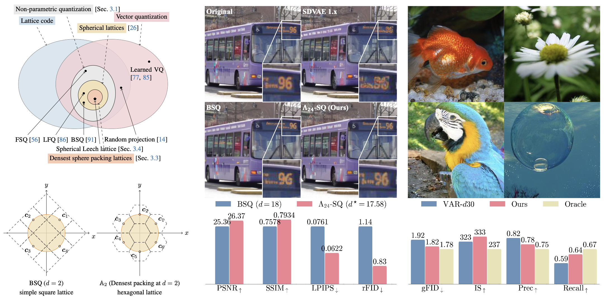

Non-parametric quantization has received much attention due to its efficiency on parameters and scalability to a large codebook. In this paper, we present a unified formulation of different non-parametric quantization methods through the lens of lattice coding. The geometry of lattice codes explains the necessity of auxiliary loss terms when training auto-encoders with certain existing lookup-free quantization variants such as BSQ. As a step forward, we explore a few possible candidates, including random lattices, generalized Fibonacci lattices, and densest sphere packing lattices. Among all, we find the Leech lattice-based quantization method, which is dubbed as Spherical Leech Quantization (Λ24-SQ), leads to both a simplified training recipe and an improved reconstruction-compression tradeoff thanks to its high symmetry and even distribution on the hypersphere. In image tokenization and compression tasks, this quantization approach achieves better reconstruction quality across all metrics than BSQ, the best prior art, while consuming slightly fewer bits. The improvement also extends to state-of-the-art auto-regressive image generation frameworks.

Upper left: A Venn Diagram that contains all definitions and quantization methods covered in this paper. We provide a unified formulation of various non-parametric quantization methods from a lattice-coding perspective in Section 3.1. The geometric interpretation of the entropy penalties in Section 3.2 then leads to a family of densest hypersphere packing lattices (Section 3.3). Based on the spherical Leech lattice, a 24-d case of the densest hypersphere packing lattices, we instantiate Spherical Leech Quantization (Λ24-SQ) in Section 3.4 and apply it to modern discrete auto-encoders (middle) and visual autoregressive models (right). Lower left: An illustrative 2D comparison between BSQ and spherical densest-packing lattice quantization (A2). Middle: An auto-encoder with Λ24-SQ outperforms BSQ in image reconstruction and compression (Qualitative results on the top). Right: Qualitative and quantitative results of a visual autoregressive generation model with Λ24-SQ on ImageNet-1k. For the first time, we train a discrete visual autoregressive generation model with a codebook of 196, 560 without bells and whistles and achieve an oracle-like performance.
@article{zhao2025npq,
author = {Zhao, Yue and Jiang, Hanwen and Xu, Zhenlin and Yang, Chutong and Adeli, Ehsan and Krähenbühl, Philipp},
title = {Spherical Leech Quantization for Visual Tokenization and Generation},
journal = {arXiv preprint arXiv:2512.13687},
year = {2025},
}